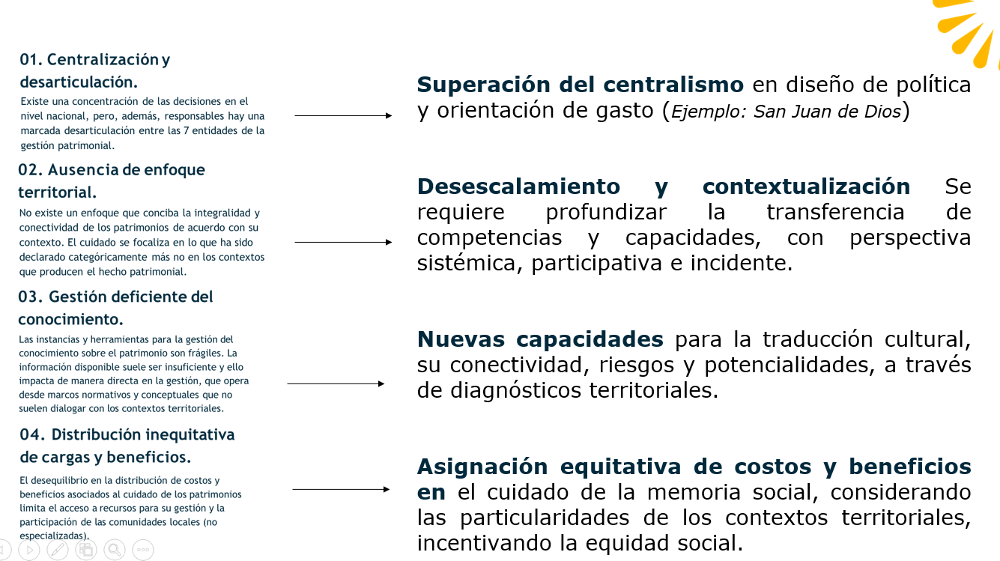

Reconocer un país de múltiples identidades y memorias locales como medio para minimizar la violencia cotidiana, desde el arraigo y la vida en proximidad.
Mediante un enfoque biocultural: comprensión y cuidado de todas las formas de vida y un enfoque bioeconómico: fortaleciendo dinámicas productivas de escala local y regional.
Y, entendiendo que debemos pasar de la conservación de objetos y prácticas a su activación social.
